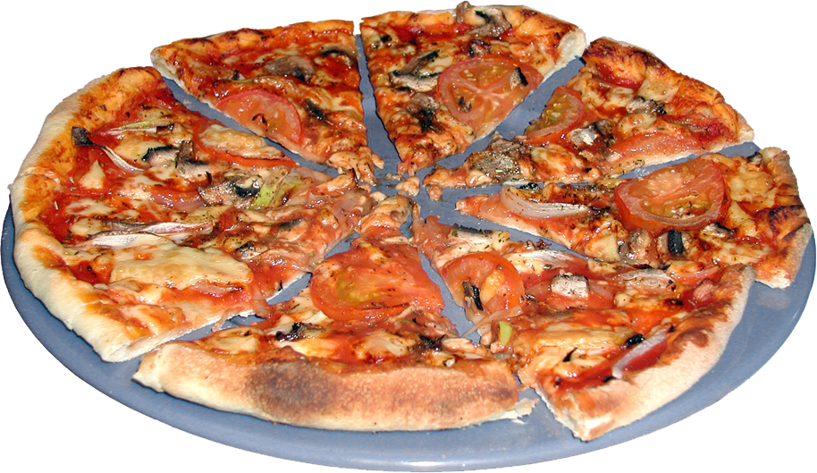

Pyszna domowa pizza krok po kroku Przepis na łatwe do wyrobienia, miękkie i elastyczne ciasto na pizz
PRZYGOTOWANIE
Świeże drożdże ocieplić w temperaturze pokojowej. Przygotować rozczyn: drożdże rozpuścić w ciepłej wodzie, dodać 2 łyżki mąki oraz cukier, dokładnie wymieszać i odstawić na ok. 10 minut do wyrośnięcia (rozczyn ze świeżych drożdży zwiększa objętość o ok. 3 razy - jeśli tak się nie stanie proces przygotowania rozczynu trzeba powtórzyć od nowa, natomiast rozczyn z drożdży instant może się tylko trochę spienić).
Mąkę przesiać do miski, wymieszać z solą, zrobić wgłębienie w środku i wlać w nie rozczyn. Sukcesywnie zagarniać łyżką mąkę do środka i przez 2 - 3 minuty mieszać składniki, pod koniec dodając jeszcze oliwę. Połączone składniki wyłożyć na stolnicę oprószoną mąką. Wyrabiać przez ok. 15 minut aż ciasto będzie elastyczne i gładkie (ciasto można też zagnieść mikserem planetarnym).
Wyrobione ciasto włożyć do dużej miski, przykryć ściereczką i odstawić na ok. 1 godzinę do wyrośnięcia.
Wyrośnięte ciasto wyjąć na stolnicę i chwilę pozagniatać. Podzielić na 2 części, uformować z nich kulki i odłożyć na ok. 7 minut pod ściereczką. Blaszki (tortownice) posmarować oliwą. Włożyć na środek kulkę ciasta, delikatnie spłaszczyć i rozciągać, rozprowadzając palcami po całej powierzchni dna, zaczynając od środka i zostawiając niewielki "wałeczek" na brzegu (zob. zdjęcia poniżej). UWAGA: najlepiej robić to kilkoma etapami, ciasto na początku sprężynuje i "cofa się" ale jeśli odczekamy chwilę będziemy mogli je dalej rozciągać.
Wyłożyć cienką warstwę SOSU POMIDOROWEGO, ser* oraz ulubione dodatki. Odczekać ok. 15 minut aż ciasto podrośnie, następnie piec w maksymalnie nagrzanym piekarniku (min. 250 st. C) przez ok. 10 minut. Prosty sposób przygotowania - pizzę pieczemy w blaszkach / tortownicach. UWAGA: ciasta na pizzę nie wałkujemy lecz rozciągamy palcami - dzięki temu zachowamy strukturę ciasta i po upieczeniu będzie ładnie wyrośnięte.